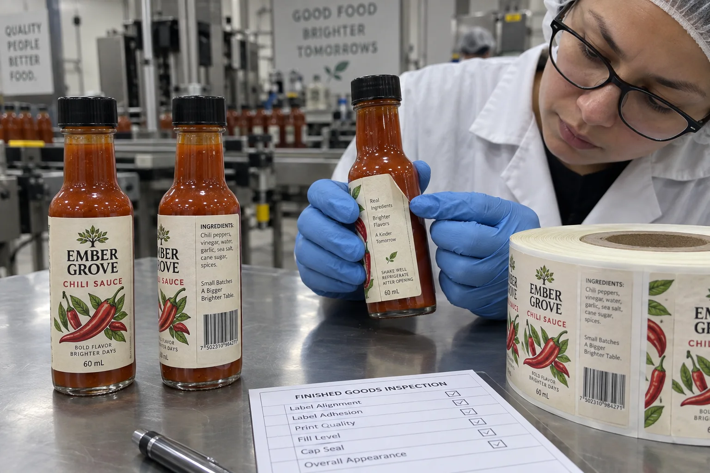

Why a mini bottle exposes a weak specification
A flat sample can look excellent. Wrap it around a small sauce bottle and the label's own stiffness starts pushing the trailing edge outward. In our quote review, I would ask for the bottle diameter at the actual label panel, not just the nominal fill volume. A tall label creeping into the shoulder is a different problem from a short label on a straight wall.
HERMA's guidance on curved-surface labeling explains the need for flexible materials and suitable adhesive on small radii. It does not give one diameter or one glue grade that works for every glass and plastic bottle. That is why I would use the maker's data to select trial constructions, not as a substitute for a bottle trial.
Two buyers with the same lifted edge
Imagine a composite hot-sauce founder hand-labeling a short run of 60 mL bottles. The label reaches from the cylindrical body into the shoulder because the founder wants more room for copy. My first suggestion would be to mark the straight section, try a shorter paper fit sample and move required information to a separate back panel if needed. That may save a premium adhesive bill on every reorder.
A co-packer with a much larger run may already have a suitable label shape but still see occasional flags after automatic application. Here I would ask for consecutive labeled bottles and machine settings, then compare the delivered construction with a more conformable candidate. Selling the co-packer a smaller graphic without checking the line would miss its real problem.
Diagnose the edge before changing the roll
| Observation | Compare next | Decision it informs |
|---|---|---|
| Lift starts where bottle narrows | Label height against the straight-wall area | Shape and placement |
| Lift follows the trailing edge on every bottle | Face-stock flexibility and edge overlap | Construction and label width |
| Only line-applied samples lift | Hand-applied controls and line sequence | Application setup |
| Lift appears after storage | Time, surface and environmental history | Adhesive and package validation |
These observations prioritize a trial; none proves a cause alone. Keep a roll strip and bottles from the same batch. Photograph immediately after application and again after the expected handling period. Do not clean production bottles with an unapproved solvent simply to improve a test result.
Write a useful mini-bottle RFQ
Send actual bottles, diameter across the label panel, bottle material and the intended label size. State whether labels are applied by hand or by machine, whether bottles are dry or damp, and how the finished pack will be chilled or handled. Ask for a production-like sample on the intended construction, including ink and finish. A blank swatch may tell you something about adhesive, but it does not reveal how a printed full-height label will behave.
For automated application, confirm core, unwind, label gap and machine speed with the equipment owner. Quadrel's bottle-size guide notes that tapered necks need shapes adapted to the changing circumference. A narrow cylindrical wall and a taper need different artwork decisions even on the same bottle.
Our buying view
Do not quote the adhesive before seeing the bottle
I can make a higher-tack option sound like a complete answer. It is often an incomplete one. A smaller, correctly positioned label may run better and cost less. If that fair fit trial still flags, then I would spend money on a more flexible face and a suitable adhesive, with the co-packer signing off on the actual line result.
Approval checklist
- Mark the usable straight-wall area on a physical bottle.
- Agree label dimensions, edge location and any overlap.
- Compare at least one printed construction on the actual package.
- Record immediate and later appearance under expected handling.
- Approve the roll format as well as the applied appearance.
If the container tapers, read our tapered bottle guide. If adhesion fails on a wider ordinary bottle, start with why bottle labels peel off.
Frequently asked questions
What is label flagging on a small bottle?
Flagging is an edge or corner lifting away from the container. On a small radius, material stiffness can work against the adhesive bond.
Will a stronger adhesive always fix it?
No. Adhesive may help, but label height, face-stock flexibility, bottle surface and application pressure also matter. Test the complete construction on the real package.
Should I test empty or filled bottles?
Use bottles in the condition in which labels will actually be applied, then observe them after filling, handling and storage as relevant.
Related buyer guides
Review your label specification
Send package photos, label dimensions, material details, quantity and application conditions. Include good and failed samples where possible so the discussion starts with evidence.